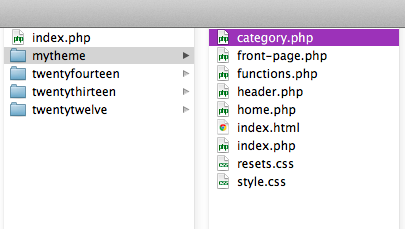
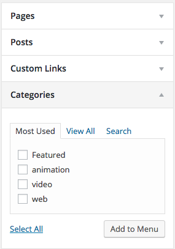

We’re going to add single.php again today, and introduce category.php, page.php, which will take care of the rest of the basic pages we need for a portfolio.
category.php can be used like front-page.php, to create an overview of posts, so we’ll start there. This time, duplicate front-page.php and change the name to category.php.
We can use categories to organize your portfolio into different sections, depending on medium, discipline or other factors.
We can add links to categories in the default WP menus:
To show which category is being viewed, use the single_cat_title() function:
<?php echo single_cat_title(); ?>This will print the name of the category using the echo keyword, which outputs a given string. If we want to include more information about the category, we can create conditional statements to determine what category is being called and add contextual content.
<?php if (is_category('Web')) : ?>
<p>A sample of previous web design work.</p>
<?php elseif (is_category('Photography')) : ?>
<p>View some of my recent photographs.</p>
<?php endif; ?>For the WP loop, we no longer need the query for featured posts that was being used in front-page.php (unless you have another set of featured posts you want to use for each category). So we can revert to the original WordPress loop:
<?php if (have_posts()) : while(have_posts()) : the_post(); ?>Let’s take a look at the WordPress Template Hierarchy again and and talk about the difference between these two templates. Okay, so single.php will be used for a single blog post, while page.php will be used for a static page. This time I’m going to duplicate index.php again, because I want see the full content of the pages and posts. Depending on how your content is organized, you may not need both of these options, or they might be exactly the same, or they might be different.
So these template files will look almost exactly the same as index.php except we want to add specific classes so make it easier to change the style.
The only difference is the CSS class for each template.
We'll update this section from index.php:
<div class="posts">
<?php if(have_posts()) : while(have_posts()) : the_post(); ?>
<article class="post"></article>For single.php change it to:
<div class="single-post">
<?php if(have_posts()) : while(have_posts()) : the_post(); ?>
<article class="post"></article>For page.php change it to:
<div class="page">
<?php if(have_posts()) : while(have_posts()) : the_post(); ?>
<article class="post"></article>For page.php, I want to add a featured image. Unlike the thumbnail for the category pages and front page, I want this to be a full sized image. To support this, I need to add something to functions.php.
add_theme_support( 'post-thumbnails' );
add_image_size( 'thumb', 200, 200, true );
add_image_size( 'feature', 960, 9999, false );This adds the option of multiple featured images. The first add_image_size() function is for small thumbnails, the second for a large featured image. You can add as many as you like.
Once we’ve added this, we have to go back and change the image size in earlier versions, including front-page.php and category.php.
<div class="featured-item">
<h3><a href="<?php the_permalink(); ?>">
<?php the_title(); ?>
</a></h3>
<?php the_excerpt(); ?>
<?php the_post_thumbnail('thumb'); ?>
</div>Then we’ll update page.php:
<article class="post">
<?php the_post_thumbnail('feature'); ?>
<h2><a href="">
<?php the_title(); ?>
</a></h2>
<div class="content">
<?php the_content(); ?>
</div>
</article>